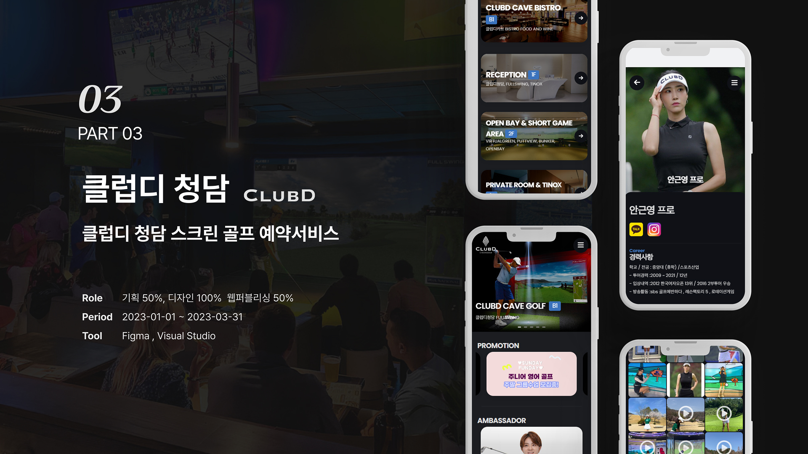
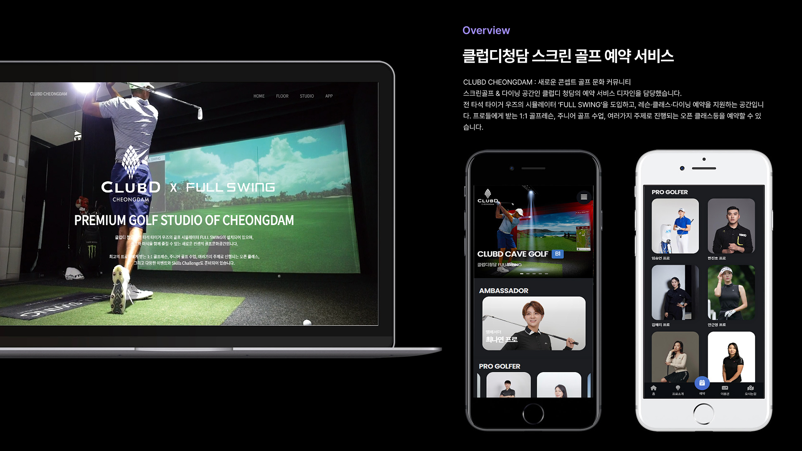
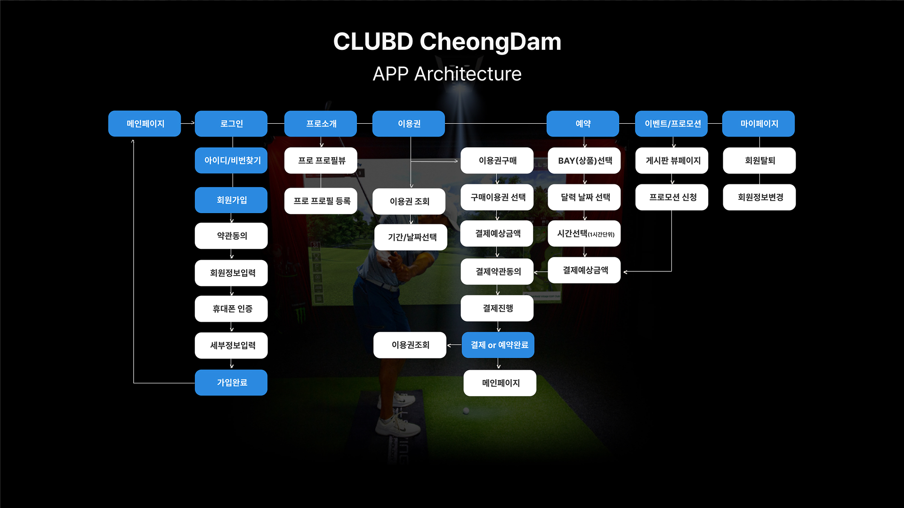
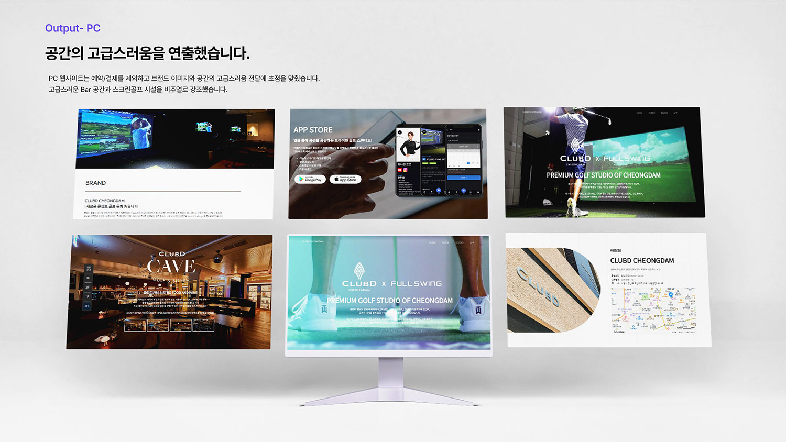
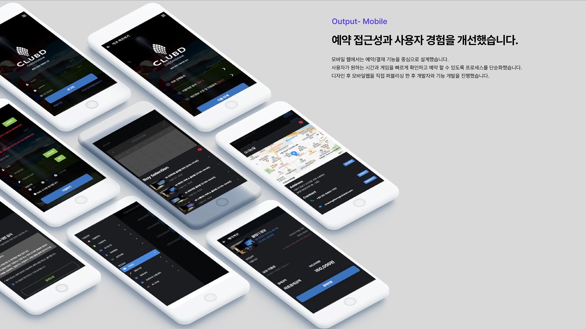
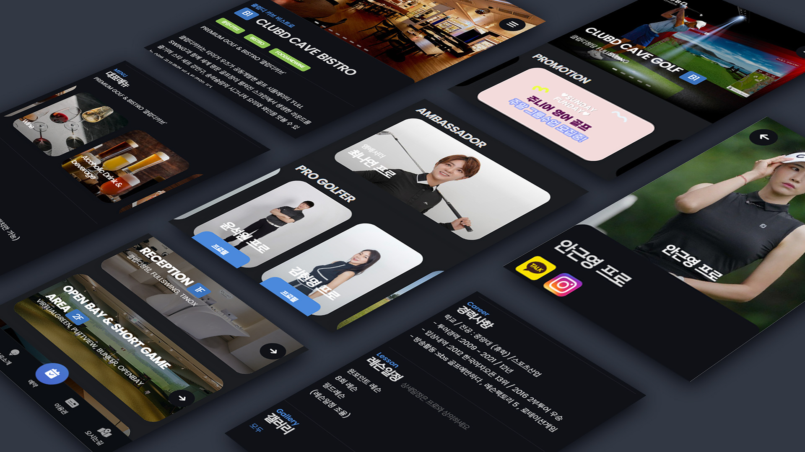

멤버십 앱
청담의 품격을 앱 하나에 담다.
프리미엄 멤버십 클럽 서비스의 디지털 경험을 설계하고,
VIP 회원에게 걸맞는 수준 높은 앱 UX를 구현한 프로젝트입니다.

청담에 위치한 프리미엄 멤버십 클럽을 위한 전용 앱을 신규 개발하는 프로젝트였습니다. VIP 회원들의 높은 기대 수준을 충족하면서도 디지털에 익숙하지 않은 일부 회원까지 편리하게 사용할 수 있는 앱을 설계해야 했습니다.


청담의 품격을 디지털로 옮기기 위해 다크 골드 팔레트, 세리프 타이포그래피, 사진 중심의 풀블리드 레이아웃을 사용했습니다. 고급 호텔 앱을 벤치마킹하여 모든 인터랙션이 부드럽고 절제된 느낌을 주도록 설계했습니다.


ClubD 청담은 '덜어내는 디자인'의 가치를 가장 깊이 체감한 프로젝트였습니다. 기능을 추가하는 것보다 무엇을 빼야 하는지, 어떻게 여백으로 품격을 표현할 수 있는지 끊임없이 고민했습니다.
